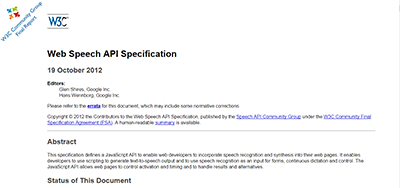
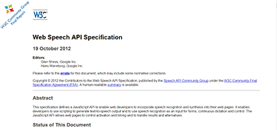
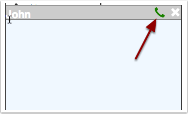

Universal Language Translated Voice/Text Chat
Break the language barrier!
Voice/Text chat with anyone around the world,
speaking any(well almost) language!
No need for costly and time consuming bilingual assistance!
Communicate via instant text/voice messaging!


Share The Love:
Proudly Built With:

 

About ULTraChat
ULTraChat is a web based real time voice/text messaging application, which allows you to communicate with other people, who don't speak/understand your native language
ULTraChat is developed as part of koding.com hackathon, 2014 and became one of the top 100 finalist projects, among around 2000 accepted teams! The Theme was 'Challenges associated with real time communication and translation' and we think this project nailed it! What do you think?
Web Based Communication:
ULTraChat is purely web based, so you can use it right from your web browser.(Though the technology currently supported in google chrome browser only)
Group/Private Chat:(Translated)
You can text chat with anyone in the group chat room, all theirs message will be shown in your own preferred language and yours to them as
their preferred language. If multiple persons message you in different languages, you will see all of them in your native(which you can select from
top left select box) language!
The translation service are served by Yandex API, which supports a wide area of languages.
The translation service are served by Yandex API, which supports a wide area of languages.
Voice Communication:(Translated)
You can also communicate to other people(speaking different language) via voice as well. This is available in private
chat system only. You can speak your own language, that will be recognized and played to your chat partner as robotic
voice in his preferred language.
To use this feature, first click on the username of a online user, and then click on the 'phone' icon that will appear
on the top bar of private message box.

Requirement:
- Google Chrome Browser(Latest Version)
- Audio Input(For Voice Recognition Based Communication)
Limitations:
- Currently voice recognition technology only available on Google Chrome. However, we can expect this feature to come to other browsers very soon, as well.
- If you are using Windows OS environment, then continuous audio input is not supported even in chrome, thus you will have to use the 'phone' icon again and again to allow you each time you speak something. On other hand, in Mac OSx environment, you should be able to go smoothly for longer conversation in a single allow.
- As currently this software isn't hosted under 'https' protocol, the voice input allow button will pop up each time you want to talk. We are expecting to move this to 'https' very soon when you won't have to do it again and again.
- Currently the chat system is powered by a very basic implementation of Socket.IO, which might be buggy! Please contact to given email below with bug reports/suggestions.
- Currently we are relying on third party services for all backend process, which causes some additional message communication cycle(sender->voice recognition service->recognized message back to sender-> to chat server->to receiver), which is delaying the communication significantly. We are planning to reduce it by establishing a backend infrastructure that will reduce these cycles and give you several times faster(sender-> ULTra server on cloud->recognized message to receiver) speed even for voice recognized messages!